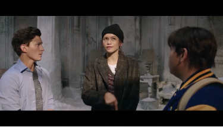

'Spider-Man: No Way Home': la idea de recrear el icónico meme del hombre araña surgió de Andrew Garfield
Marvel ha compartido compartó una fotografía donde podemos ver a los tres actores de 'Spider-Man: No Way Home',Tom Holland, Tobey Maguire, y Andrew Garfield recreando el famoso meme del hombre araña que lleva siendo viral muchos meses, donde ahora son tres los superhéroes los que se están señalando, como si no se conocieran, un momento que se pudo ver, de forma más sutil en la propia pelicula.
El meme, que viene, cuya imagen proviene del episodio de los dibujos animados de Spider-Man de 1967, 'doble identidad', en el que un villano intenta hacerse pasar por el héroe, se ha compartido de nuevo para anunciar la venta de compartido de nuevo para anunciar la venta de formatos domésticos y aparición en digital de la película el 22 de marzo con una imagen especial de los actores durante el rodaje, en otros momentos detrás de las cámaras como Tobey Maguires imitando algunos pasos prohibidos de su infame baile en 'Spider-Man 3'.